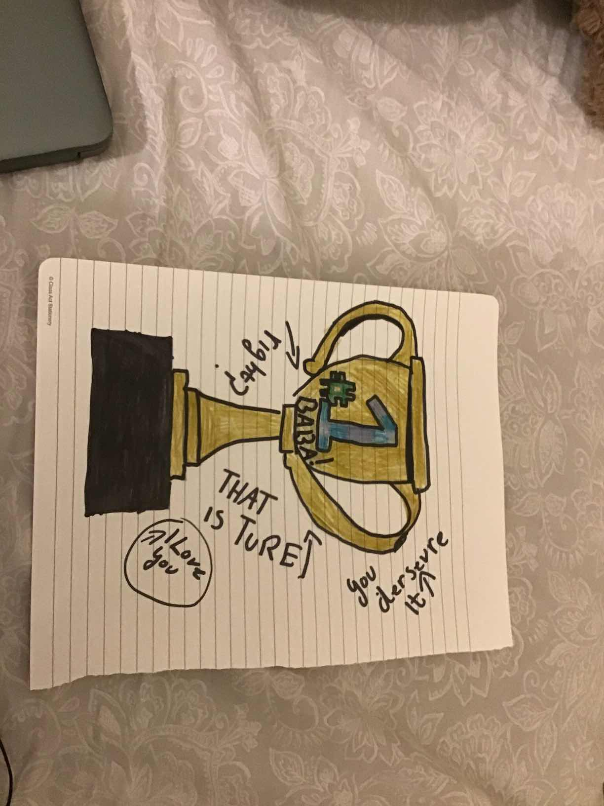
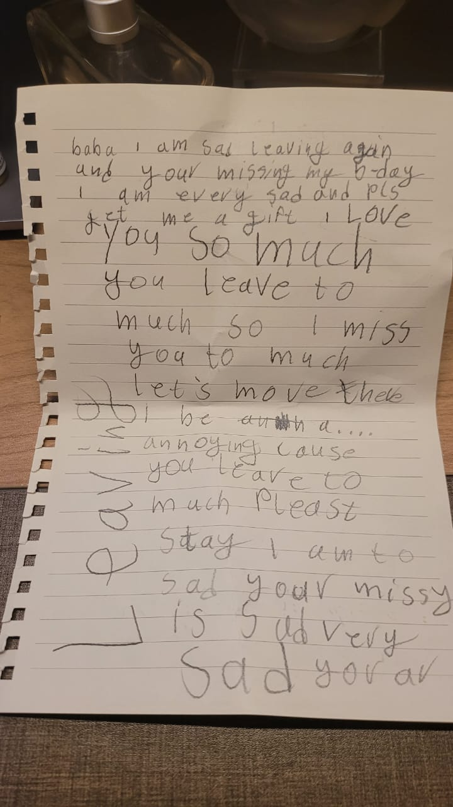

Chapter Fifteen
Letters to My Daughters
A Legacy Beyond Business
Audio only"For Nashwa, Amirah, and Ahlam."


This memoir is, in the end, a letter. Not to a publisher, not to a client, not to the business community that has been my professional home for two decades. It is a letter to Nashwa, Amirah, and Ahlam.
There are things a father wants his daughters to understand that cannot be communicated in real-time. They require distance, reflection, and the kind of honesty that is easier on paper than in person. These are the things I want you to know.
I do not want you to read these chapters as instructions for becoming me. You will belong to places and build lives I cannot foresee, and you will question some of the conclusions I reached. I hope you will. What I want to pass on is not a finished map, but the habit of looking closely: at who has been left outside, at what a decision asks of other people, and at what remains worth protecting when circumstances change. That is a compass you can make your own.
On Resilience
You will face moments when everything you have built seems to disappear. When the ground shifts beneath you and the rules you learned no longer apply. These moments are not punishments. They are revelations. They show you who you are when the scaffolding falls away. Trust what remains. It is your foundation.
I have rebuilt my career, my sense of identity, and my understanding of the world multiple times. Each time, the rebuilding was more informed, more deliberate, and more aligned with my actual values rather than the values I had absorbed from context. Displacement is painful, but it is clarifying. Never fear it.
On Dignity
Never confuse power with dignity. Power is contextual and temporary. Dignity is intrinsic and permanent. I have sat across the table from people with immense institutional power who had no dignity, and I have worked alongside people with no formal authority who embodied it completely. Choose dignity. Every time.
The Super-Labor work, the nation-building work, the governance work — all of it reduces to a single principle: treat people at the foundation of any system with the respect that the people at the top expect for themselves. This is not idealism. It is architecture. Systems that violate this principle eventually collapse under their own weight.
On Systems
Never accept a broken system as final. Systems are designed by people, which means they can be redesigned by people. The fact that something has always worked a certain way is not evidence that it should continue working that way. It is evidence that no one has yet had the courage or the vision to change it.



On Legacy
I will not pretend that I have figured out everything. I am competitive, restless, and intolerant of mediocrity — traits that have served my career but have not always served my patience. What I can tell you is that the greatest pride I carry is not the frameworks, not the companies, not the portfolio metrics. It is watching you three grow. And it is the hope that somewhere in these pages, you find a compass of resilience that guides you when the systems around you shift.